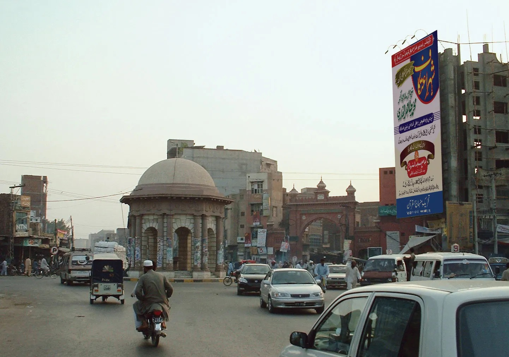

Faislabad is previously known as Lyallpur named after the founder of the city, but was renamed in 1977 in honour of late King Faisal of Saudi Arabia. It is the 3rd largest city in Pakistan after Karachi and Lahore respectively, Faislabad is the 2nd largest city in Punjab after Lahore. Faisalabad is one of Pakistan's wealthiest cities, the largest industrial hub and second largest city of wider Punjab region.
Famous Things in Faislabad
|  |